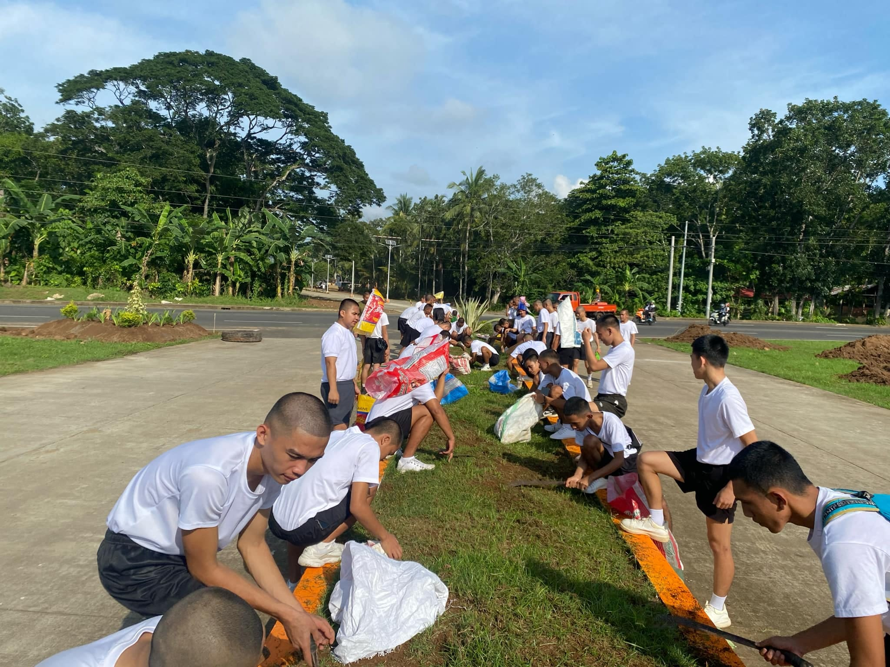
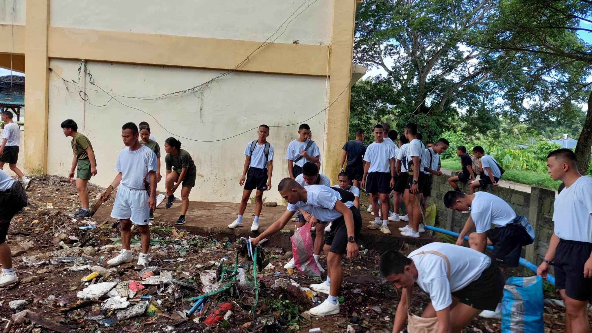
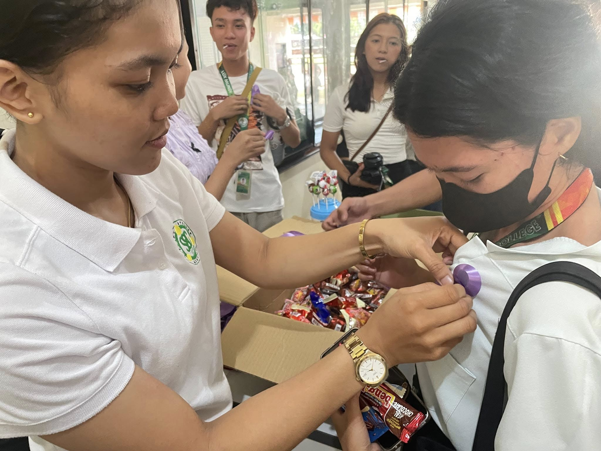

<!Doctype html>
<html lang="en">
<head>
     <meta charset="UTF-8">
     <meta name="vieport" content="width=device">
     <title></title>
     <style>


body {

        margin:0;
        font-family: 'Trebuchet MS', 'Lucida Sans Unicode', 'Lucida Grande', 'Lucida Sans', Arial, sans-serif;
        background-color: #f2f2f2;
        overflow-y: scroll;
     }
     @keyframes fadeIn {
        from { opacity: 0;
        } to{opacity: 1;
        }
     }

     @keyframes slideUp {
        from {transform: translateY(40px); opacity: 0;}
        to {transform: translateY(0); opacity: 1;}
     }

     header {
        background: linear-gradient(to right, #333, #555);
        color:lightgreen;
        padding: 40px 20px;
        text-align: center;
        animation: fadeIn 1.5s ease-in-out;
        font-size: 50px;
        
     }
     
     nav a {
        color:  #333;
        margin: 0 15px;
        text-decoration: none;
        font-weight: bold;
        transition: 0.3s;
        font-size: 20px;
     }


     section {
        padding: 30px;
        margin: 20px;
        background: white;
        border-radius: 10px;
        box-shadow: 0 2px 10px rgba(0,0,0,0.15);
        animation: slideUp 1s ease-in-out;

     }
      .h1{
      
         font-size: 20px;
      }
     .h2 {
      
      font-size: 20px;
     }

    
 
     .float {
  animation: float 3s ease-in-out infinite;
  display: flex;
  gap: 10%;
  border-radius: 10%;
  width: 300px;
  height: 200px;

     }

@keyframes float {
  0%   { transform: translateY(0); }
  50%  { transform: translateY(-15px); }
  100% { transform: translateY(0); }
}
.image{
   display: flex;
   gap: 30px;
}

.h3 {
   font-size: 50;
   text-align: center;
   color: lightgreen;
}
     
     
     
    </style>
     </html>
     </head>
<div class="html">


     <header>COMMUNITY SERVICE OR ADVOCACY</header>
<section id="COMMUNITY SERVICE OR ADVOCACY">
<h3 class="h3">“A strong school is built not just by learning, but by helping one another.”</h3>
</section>
<section>
  <ul>
   <div class="image">
    
    
    
    
    
    </div>
    </section>
   
    <section>

      <h2 class="h2">Our school believes that helping others is an important part of being a good student and a good person.
          We want to show that our school is not only a place where we learn lessons, but also a place where we care for people around us. 
          Every student is encouraged to take small steps that can make a big difference in our community.</h2>
    </section>

    <section>

      <h2 class="h2">We support simple acts of kindness, such as sharing school supplies, joining clean-up drives, donating old books and clothes, and taking part in community activities.
          Students are also encouraged to volunteer during school events, help younger students, and join outreach programs.
           Through these actions, we learn how to be compassionate and responsible.</h2>
    </section>

     <section>
     <div class="image">
    
    
    
    

   </div>
   </section>

   <section>
      <h1 class="h1">Our goal is to build a school where everyone helps each other. When we work together, we create a kinder, safer, and more supportive environment for everyone. 
         By helping others, we show that our school is strong not only in academics but also in care and compassion.
         Together, we can make our school a place where kindness grows every day</h1>
   </section>
  

</ul>

</section>


</div>
</html>
</html>

 